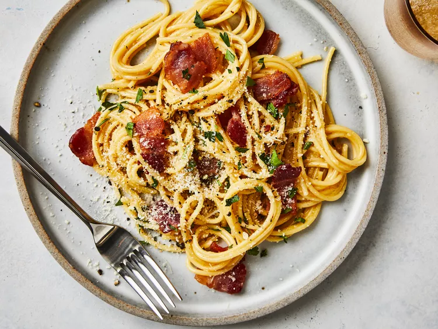

Spaghetti Carbonara

Description
This bacon carbonara is a super rich, classic "bacon and egg" spaghetti dish
that's great to serve for company. This recipe also makes an unusual brunch offering.
Ingredients
- 1 pound spaghetti
- 2 tablespoons olive oil, divided, or as needed
- 8 slices bacon, diced
- 1 onion, chopped
- 1 clove garlic, minced
- ¼ cup dry white wine
- 4 large eggs, beaten
- ½ cup grated Parmesan cheese
- salt and black pepper to taste
- 2 tablespoons chopped fresh parsley
- 2 tablespoons grated Parmesan cheese
Steps
- Gather all ingredients.
- Fill a large pot with lightly salted water and bring to a rolling boil. Stir in pasta
and return to a boil. Cook pasta uncovered, stirring occasionally, until tender yet firm
to the bite, about 8 to 10 minutes. Drain and transfer into a large bowl.
- Meanwhile, heat oil in a frying pan over medium-low heat. Add onion; cook and stir until softened,
about 3 minutes.
- Stir in pesto, salt, and pepper until warmed through.
- Add pesto mixture to hot pasta; stir in grated cheese and toss well to coat.